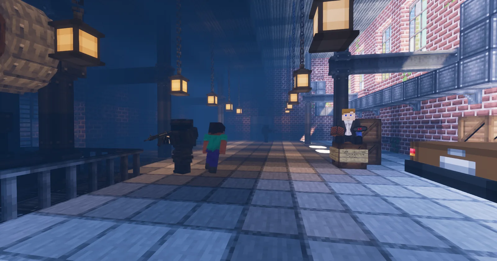
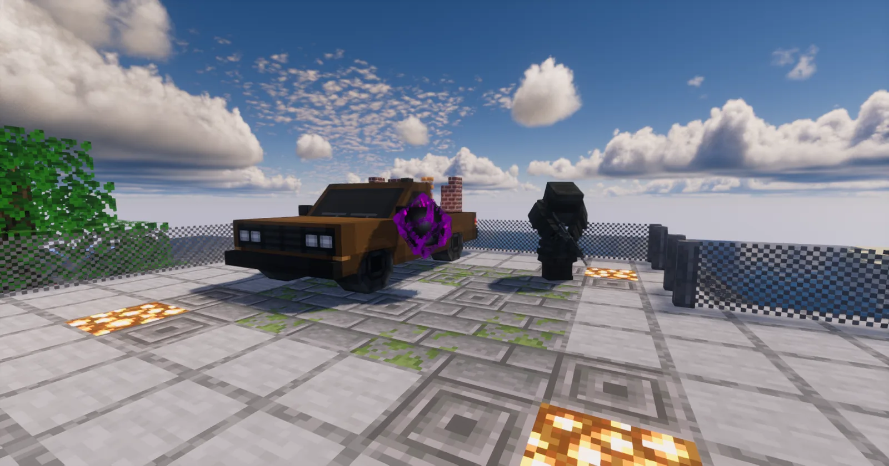
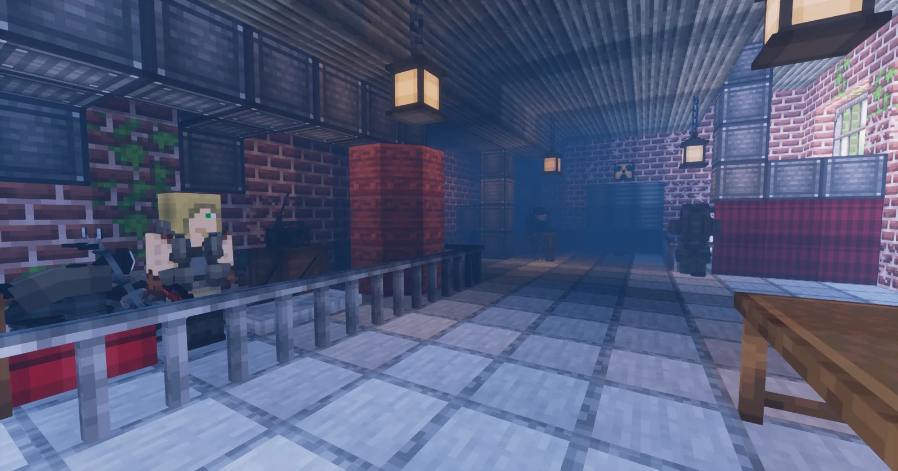
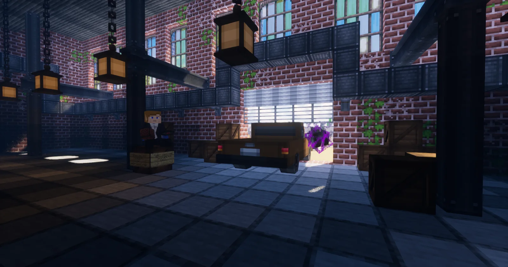
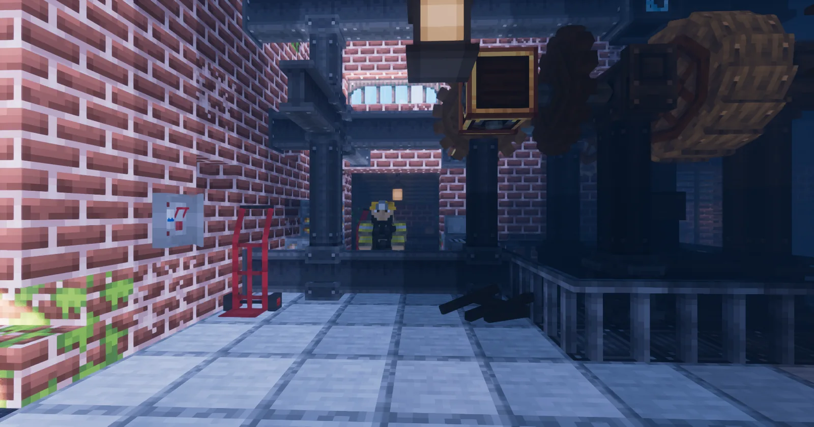
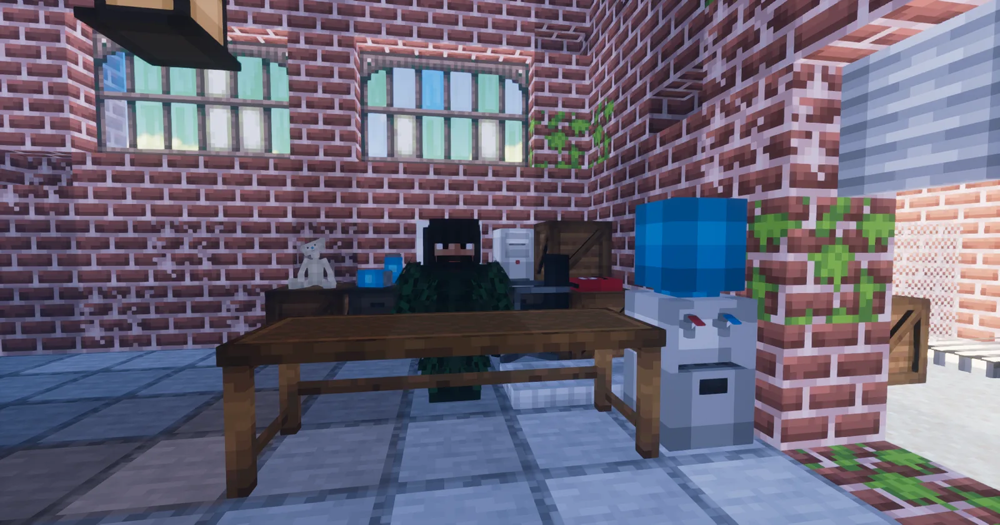
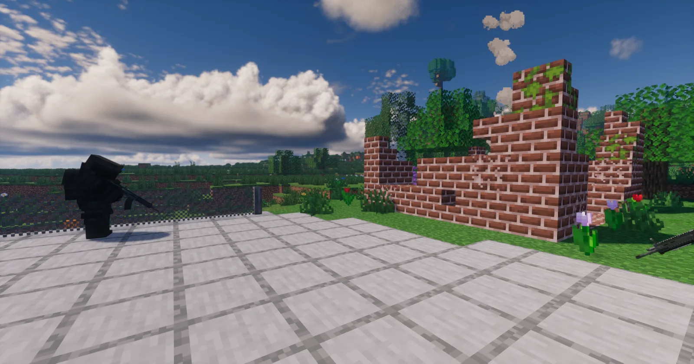
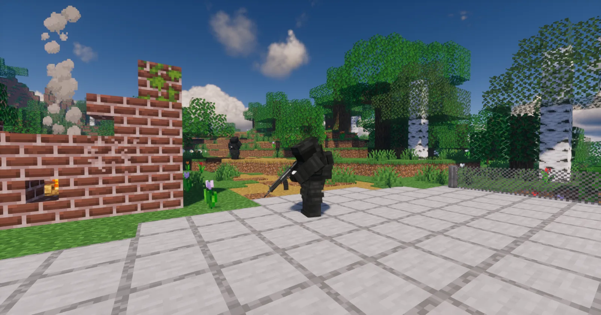

Огнестрельное оружие
Пистолеты, автоматы, дробовики, пулемёты, прицелы и десятки типов патронов.
MINECRAFT 1.20.1 · FORGE
Сервер Minecraft с модами, лаунчером и зомби-апокалипсисом
Русский сервер выживания на Minecraft 1.20.1. Ищите оружие, исследуйте данжи, находите транспорт и танки, укрепляйте базу и не оставайтесь одни после заката.
МИР ПОСЛЕ КАТАСТРОФЫ
HORDE превращает Minecraft Java 1.20.1 в мир зомби-апокалипсиса. Исследуйте разрушенные города, больницы, лаборатории и военные объекты, добывайте патроны и лекарства, стройте защищённую базу и держитесь вместе во время ночной орды.
HORDE LAUNCHER
Без регистрации и лишних аккаунтов: ник, память, скин, проверка обновлений и запуск в одном окне. Справа — атмосферные кадры сервера, слева — всё управление сборкой.
Пистолеты, автоматы, дробовики, пулемёты, прицелы и десятки типов патронов.
Военные, заражённые, учёные и редкие опасные виды зомби с разным поведением.
Развалины, школы, заводы, бункеры, лаборатории и лутаемые останки выживших.
Закрепляйте территорию, объединяйтесь с игроками и защищайте накопленные ресурсы.
Машины, техника SuperB Warfare, воздушные и водные маршруты, инженерные постройки для выживших.
PvP включён во всех игровых мирах HORDE. Безопасными зонами остаются только /spawn и /market.
Слышимость зависит от расстояния. Договаривайтесь тихо — заражённые рядом.
Лаунчер сам проверяет сборку, скачивает новые моды и удаляет устаревшие файлы.
ОБНОВЛЕНИЕ · 21 АВГУСТА 2026
Лаунчер получил поддержку HD-скинов Minecraft, более заметную кнопку папки игры, жёсткое закрытие процесса и обновлённый главный экран без лишних плашек. В pack 5.0.35 заменён partyhealth-1.0.7.jar на русскую версию.
Фоновый спавн Infectious стал спокойнее: меньше пачек вокруг игроков, реже проверки и меньше риск массовых таймаутов при просадке TPS.
Раздел Донат принимает ник игрока и открывает DonationAlerts с подсказкой формата сообщения. Тестовая выдача PRO уже проверена на сервере.
PRO, ELITE, PRIME и EMPEROR работают как отдельные серверные группы на 30 дней и имеют приоритет выше игровых рангов HORDE.
Каждая активная привилегия получает один месячный набор. Ценная одежда, оружие и редкие предметы завязаны на владельца и активную подписку.
Поток уже настроен: игрок вводит ник, оплачивает через DonationAlerts, сервер сверяет сумму и сообщение, затем выдаёт группу и готовит кит.
На странице сразу закреплено: не продаём админку, бесконечные ресурсы, чужие приваты и имбу, которая убивает survival.
БЫСТРЫЕ РАЗДЕЛЫ
Скачать HORDE.exe, установить Forge 1.20.1, моды и автообновления без ручной настройки.
Разрушенные города, орды, мутанты, вылазки, базы и survival после катастрофы.
TacZ, Create, SuperB Warfare, CustomNPCs, TacZ NPCs и другие моды HORDE.
Старт, приваты, рынок, донат, команды, фракции и советы для первой ночи.
Тест будущей авторизации сайта и лаунчера по нику Minecraft без ручного ввода /login.
Патроны, прицелы, рукоятки, приклады, дула и торговец модулями.
Контейнеры техники, боевые машины и редкие цели для вылазок.
Проводник, торговцы, скупщик, союзные защитники и враждебные группы.
ЭКОНОМИКА HORDE
Введите /market, чтобы попасть в отдельную безопасную торговую зону. В центре находятся банкоматы и Механик HORDE, а светлые площадки отведены под магазины игроков.
Откройте JEI и найдите @spudaciousshops. Скрафтите витрину, полку или торговый ящик.
Поставьте магазин на свободную светлую площадку. Обычные блоки и сундуки на рынке защищены.
Укажите товар и оплату банкнотами HORDE, затем загрузите запас. Чужой магазин нельзя сломать или перенастроить.
После торговли используйте команду выхода из рынка: сервер вернёт вас в сохранённую точку обычного мира.
ИСТОРИИ ВЫЖИВШИХ



СКРИНШОТЫ СЕРВЕРА





ПЕРВЫЙ ЗАПУСК
Один EXE для Windows. Java, Forge и моды отдельно устанавливать не нужно.
Выберите PNG-скин при желании и запустите игру без лицензии или через официальный аккаунт.
Используйте /register пароль пароль. При следующих входах — /login пароль.
ЧАСТЫЕ ВОПРОСЫ
HORDE — русский сервер выживания Minecraft с модами про зомби-апокалипсис. Игроки исследуют разрушенные города, добывают оружие, строят базы и переживают атаки орды.
Сервер работает на Minecraft Java Edition 1.20.1 с Forge и предназначен для компьютеров Windows.
Скачайте HORDE.exe с официального сайта проекта. Лаунчер сам установит Minecraft 1.20.1, Forge, моды и русские ресурсы, а затем будет получать обновления автоматически.
Обновление от 13 августа 2026 добавляет систему 30 игровых рангов HORDE по наигранному времени. PvP не влияет на ранги, а донатные и staff-префиксы не перетираются.
Да. На сервере есть транспорт и техника SuperB Warfare, включая редкие боевые машины. Ищите контейнеры, исследуйте военные зоны и промышленные локации — ценный лут спрятан не на виду.
Да, доступ к серверу HORDE и загрузка фирменного лаунчера бесплатны.
Нет. HORDE использует Minecraft Java Edition, Forge и моды, поэтому для игры нужен компьютер под управлением Windows.
ГОТОВЫ ВЫЖИВАТЬ?
Фирменный лаунчер установит Minecraft 1.20.1, Forge, серверную сборку модов и русские ресурсы. Следующие обновления придут автоматически без повторного скачивания EXE.